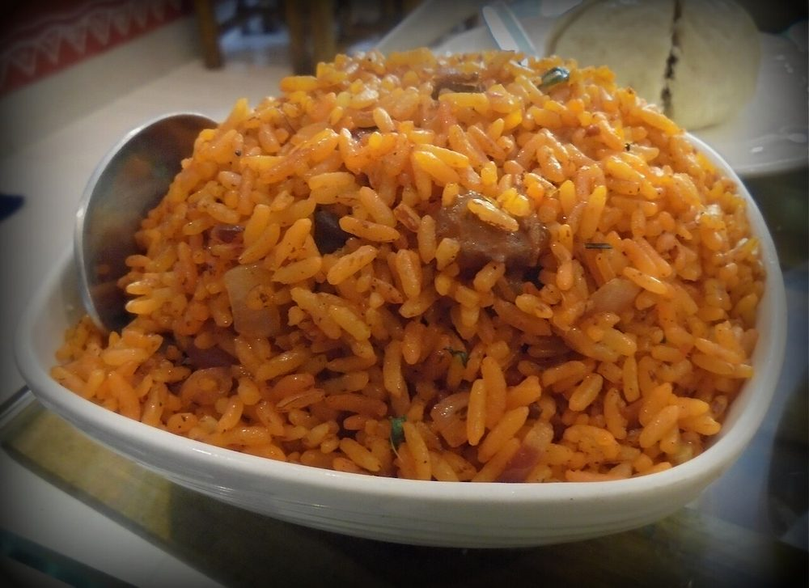

Jadoh
khasi rice cooked through with pork, ginger and black pepper, meghalaya's one-pot meal

Allergens: none of the ten listed below
Checked against the ingredient list for ten allergens: milk, egg, fish, crustaceans, tree nuts, peanuts, sesame, mustard, soy and gluten. Brands vary, so read the label on anything new to you.
Ingredients
Quantities for 4.
- 300g short-grain, washed until the water runs clear RiceKhasi red rice is what is used at home; any short-grain rice works
- 400g belly or shoulder with its fat, cut into 1cm dice Pork
- 2 medium, finely sliced Onion
- 2 tbsp, finely chopped Gingerjadoh is a gingery dish; do not cut this back
- 6 cloves, chopped Garlic
- 1.5 tsp, coarsely crushed Black Pepper
- 1 tsp Turmeric
- 2 Bay Leafoptional
- 3, slit Green Chillioptional
- 1 tbsp Neutral Oilonly to start the pork off; it renders plenty of its ownoptional
- 3, chopped Spring Onionoptional
- to taste Salt
- 600ml, hot Water
Cookware
stovetop
Before you start
- Wash the rice until the water runs clear and soak it 20 minutes, then drain it well. Wet rice going into hot fat clumps.
- Traditional jadoh is cooked with pig's blood, which is what gives it the dark colour you see in Shillong stalls. This version leaves it out; the turmeric version is common at home and in Khasi restaurants.
- Get the pork diced small (1cm) so it cooks in the same time as the rice.
Method
- Heat the oil in a heavy pot and fry the diced pork over medium-high heat for 8 minutes, until it has rendered its fat and the edges are browned and crisp.Crowd the pot and it steams instead of browning. Use a wide pan and give it room.
- Add the bay leaves and sliced onion and cook 8 minutes in the pork fat, until the onion is gold and sticky.
- Stir in the ginger and garlic and fry 2 minutes, until the raw edge has gone.
- Add the turmeric and crushed black pepper and stir for 30 seconds.
- Tip in the drained rice and toss gently for 3 minutes, until every grain is coated and glossy and the rice smells toasted.Fold rather than stir. A spoon dragged through soaked rice snaps the grains.
- Pour in the hot water, add the green chillies and salt, and bring to a fast boil.
- As soon as the water level drops to the surface of the rice, cover tightly, drop the heat to its lowest and cook 12 minutes undisturbed.No peeking. Lifting the lid lets out the steam that is doing the cooking.
- Take it off the heat and rest, still covered, 10 minutes. Fluff with a fork, scatter over the spring onion and serve.
Storage
Keeps 2 days refrigerated. Reheat covered with a tablespoon of water sprinkled over the top, on low heat or in a steamer, so the grains soften rather than dry out.
Nutrition Medium estimate
High protein: 28+ g a serving, 23% of the calories
| Per serving263 g | Per 100 g | |
|---|---|---|
| Calories | 490+ kcal | 187+ kcal |
| Protein | 27.9+ g | 11+ g |
| Carbohydrate | 70.3+ g | 27+ g |
| of which sugars | 3.0+ g | 1+ g |
| Fibre | 2.2+ g | 1+ g |
| Fat | 9.7+ g | 4+ g |
| of which saturated | 2.5+ g | 1+ g |
| of which unsaturated | 6.4+ g | 2+ g |
The + means ingredients given to taste rather than by weight are counted as zero, so the true figure is a little higher than shown. Worked out from the listed quantities. Some of the ingredient list is given to taste rather than by weight, so treat these as a guide. Ingredients given to taste rather than by weight are counted as zero, so the real figure is a little higher than this. The + says so. Estimated from raw ingredients using USDA FoodData Central. Cooking changes are not modelled, and added salt is excluded, so sodium is not given.
Written and checked against sources, not cooked in a test kitchen. Times, yields, allergens and nutrition are worked out rather than measured, so use your own judgement on doneness and on storing. More in About.